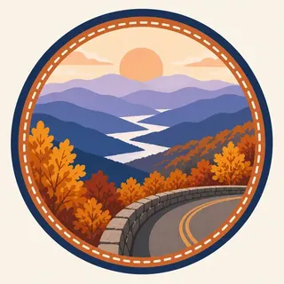

01
Skyline Drive
105 miles along the Blue Ridge crest, built beginning in 1931 and continued by the Civilian Conservation Corps, at a cost of more than $4,500,000.
TrailMark Archive Edition
Virginia | Blue Ridge Mountains
Established December 26, 1935, the first wilderness park east of the Mississippi, over land that held more than 500 mountain families a few years before.
Archive No. TM-SHEN-058
National Park since 1935
Collection Skyline Drive
Park Overview
Shenandoah National Park was established December 26, 1935, the first wilderness area east of the Mississippi River to become a national park.
The park protects over 200,000 acres along the Blue Ridge, with more than 60 peaks above 3,000 feet, and runs 105 miles long while never more than about 15 miles wide. Roughly 40 percent of the park, 79,579 acres, is designated wilderness.
Skyline Drive, the 105-mile road running the length of the park along the ridgeline, began construction in 1931 under the Hoover administration, a joint project of NPS and the Bureau of Public Roads, continued and largely built by the Civilian Conservation Corps.
Emotional Thesis
The header painting sets Skyline Drive curving along a stone guardrail above autumn ridges fading into blue haze, the view the road exists to offer. That view came at a cost the park now documents openly.
The park was assembled from more than 3,000 individual land tracts, purchased or condemned by the Commonwealth of Virginia and given to the federal government. At least 500 families were displaced in the process: some relocated to resettlement communities, some given life estates, some evicted with their houses burned, most simply leaving the mountain on their own.
Landscape Highlights
01
105 miles along the Blue Ridge crest, built beginning in 1931 and continued by the Civilian Conservation Corps, at a cost of more than $4,500,000.
02
The park's most popular hike: a 9.4-mile, very strenuous circuit with 2,348 feet of elevation gain and an adventurous rock scramble near the summit, requiring a separate day-use ticket in season.
03
A 1.4-mile circuit hike descending 0.75 mile to the falls from the Central District at Skyline Drive mile 50.7, about 75 minutes round trip.
Wildlife
The park lists more than 50 mammal species, over 190 resident and transient bird species, and 26 reptile species. The extra drawing, a white-tailed deer on fallen leaves, is the archive's image of that Blue Ridge forest, not a census.
01
Black bears live throughout the park; food storage rules apply at all campgrounds and backcountry sites.
02
American bison and elk were hunted to regional extinction by 1798 and 1855; most species that have returned did so through reintroduction elsewhere in Virginia or natural recovery, not within this park specifically.
03
The endangered Shenandoah salamander is found nowhere outside a handful of high-elevation sites in the park, among 41 documented fish species including brook trout.
Geology
The Blue Ridge crest that Skyline Drive follows offered the elevation and vantage the park's planners wanted; the road's alignment was chosen to maximize ridgeline views rather than to follow the easiest grade.
01
Over 60 peaks in the park rise above 3,000 feet, giving Skyline Drive its overlooks in both directions along most of its 105 miles.
02
Old Rag's granite summit and its named rock scramble are a distinct geologic feature from the softer, forested ridgelines elsewhere in the park.
03
No page opened for this essay gives a specific rock age for the Blue Ridge formations here; none is stated as a precise figure.
Peak foliage season along Skyline Drive draws the park's heaviest visitation; the header painting reflects this signature view.
Warm, often hazy ridgeline views; Old Rag and other strenuous hikes are best started early to avoid afternoon heat.
Sections of Skyline Drive close temporarily during snow and ice; check current status before a winter visit.
Waterfalls run fullest with snowmelt and spring rain; wildflowers return to the forest floor along lower trails.
Photography
A ridge overlook without the road or its stone guardrail could be almost any Appalachian view. Skyline Drive itself, curving along the crest, is what places the photograph here.
01
A stone wall or parking area in frame ties a ridge view directly to Skyline Drive rather than to an unnamed mountain.
02
A summit photo alone misses what makes the hike notable; the rock scramble sections are part of the story.
03
Shenandoah's ridges are narrower and more linear than the Smokies' broader range; a single-ridge composition reads as this park specifically.
Field Notes
More than five hundred families left this mountain so a road could show the view they used to live inside of.
TrailMark Field Notes

Badge Story
The badge fails if it is only distant blue ridges. Skyline Drive's stone wall and pavement curve are what claim this specific park.
Warm autumn orange and gold against cool blue ridgeline haze.
A visible curve of road or stone wall, not an unbounded view.
No single dramatic peak; Shenandoah's identity is the ridgeline drive, not one summit.
Archive No.058
LocationBlue Ridge Mountains
ReleaseSkyline Drive Mark
Stewardship / Safety
Skyline Drive is a mountain road subject to fog, ice, and closures; the park's displacement history is part of what a visit here means, not a footnote.
Check Skyline Drive status before driving, especially in winter; sections close for snow, ice, or wildlife management.
Old Rag requires a day-use ticket March through November in addition to a standard park entrance pass.
Store food properly at all campsites; black bears are active throughout the park.
Respect historic hollow sites and remaining structures; they document real displaced communities, not staged ruins.
Current conditions, fees, and alerts are on the National Park Service site.
Continue the Archive
New River Gorge is a river cut deep through the same mountain chain; Shenandoah is the ridgeline above a different stretch of it. Great Smoky Mountains, already open, is the broader, more heavily forested version of this same Appalachian range.